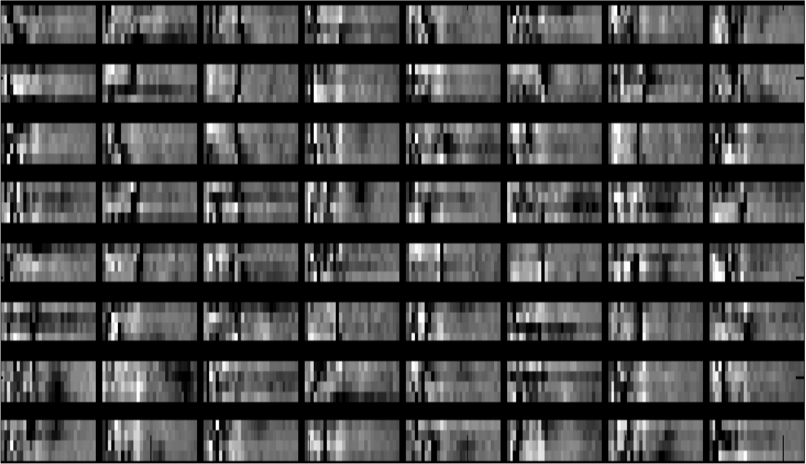

Projects
Under the guidance of Dr. Amit Sethi, Dept. of EEE, IIT Guwahati

Brain computer interfaces (BCI) allows people to communicate with their environment and control prosthetics or other devices using their brain activity solely. For people who are severely paralyzed, extremely amputated and with late-stage brain diseases BCI serves as a promising tool to aid them in their daily routines. Apart from medical use, BCI finds potential applications in fields of virtual reality, multimedia and related fields
Many techniques are available to measure the brain activity, among them ElectroEncephalography (EEG) is widely used because of its non-invasiveness, lower cost and high temporal resolution. Due to advancements in neurotechnology, consumer grade devices like Emotiv Epoch, Neurosky and others to measure EEG signals at affordable cost are available at cheaper price.
EEG data is of very high dimensionality. Our approach includes preprocessing of EEG signals, perform unsupervised feature learning techniques such as sparse autoencoder to extract potential features which can be used to classify task using different classifiers and generate an appropriate control signal to perform the desired task
[read more]
Under the guidance of Dr. Amit Sethi, Dept. of EEE, IIT Guwahati
Images of high resolution are often required in various fields of science and technology. For example, a HR image can be very helpful to doctor for better diagnosis. Our current technology has reached a stage where generation of HR images by hardware assisted solutions has almost been reached. As a result software assisted solutions are being developed. These software techniques use the obtained Low resolution images (due to hardware constraints) to produce a single High resolution image using Signal processing techniques and are known as Super Resolution. Super Resolution has enormous application in bio-medical, commercial domain, remote sensing etc. Based on number of input images SR can be classified into Single image SR and multi-image SR. My works includes studying various SR techniques. Our SR research group was able to publish two papers which find application of neural networks in SR imaging.
Self intiated

Virtual Torch is a web based tracking Application in which one has to find the person in the background (in dark) by using color tracking. So one can experience a casting the light onto the screen using a virtual torch. By using light casted onto screen identify the person/image. Here are few instructions of how to set tracker and use the application
The problem statement is to predict the salary given the job advertisement. Classic data mining techniques such as porterStemming, removing stop words were done later TF-IDF were calculated. Based on TF-IDF top 500 features were selected. Other feature such as job category, location and job source were also used.
The features obtained by above process were then passed to and ensemble of trees to generate a new feature set which were used as input for ANN.
The aim of the project is to classify the group of people who are most likely to survive the most infamous disaster Titanic Shipwreck .
Learning from disaster lets people analyze the cause of disaster and help in managing the disaster effectively
The details about the person such as name, gender, cabin number, ticket number, age, port of embarkation, passenger class were given.
Initially correlation between various features and survival was computed to find the relevance of different features.
Upon computing the correlation, interesting patterns were observed.
Random forest were then used to predict the survival
The concept of Recaptcha which serves the both purpose of Human/bot differention and digitilizing books, literature intrigued me, that was my motivation for the development of Captcha in telugu aiming to support Recaptcha in Telugu which can be extended to other languages as well.
The key challenges of the project were:
- Take input in non-english language
- To find support for unicode fonts in PHP
Prototypes
Multimodal interface for games is a hobby project. Currently prototypes have non-speech interface. Using new interfaces adds a dimension of interaction between gamers and game.
Prototype games are available as Executable jar applications. Later APK (for android platform) will be released
*requires microphone
FPGA implementation of binary modulation techniques like Binary Ampitude Shift Keying, Binary Phase Shift Keying and Binary Frequency Shift Keying using digital Sine Wave generator.
It basically is implementation of a published technical paper: C. Erdoğan, I. Myderrizi, and S. Minaei, “FPGA Implementation of BASK-BFSK-BPSK Digital Modulators”, IEEE Antennas and Propagation Magazine,Vol. 54, No. 2, April 2012 in verilog.
The report containing codes and explanation is available here
Guess it is a number guessing game which was implemented using 8085 under the guidance of Dr. Amit Sethi, Dept. of EEE, IIT Guwahati
It is a number guessing game in which user will have to guess the number in three attempts, during which game set guides user by displaying whether the random number generated by Game is higher or lower than current guess.
Developed a software solution called GramaaAgrasia for handling stocks using PHP-MYSQL for Agrasia, local firm at Hyderabad, India.
CatchDrop is a game which is written in Java using LibGDx development library.In this game user has to collect as many drops as possible using the bucket. The game is available for Windows, Android and Web platforms.
Catch the Drop Snapshot on Android Emulator
Image slider (hobby project) is an android application project. It contains various basic image processing effects such as Blur, Edge detect, Edge Emboss, Sharpen, Gaussian blur.
It also provides a slider through which users can play with the parameters selected
Super Resolution of images under the guidance of Dr.Amit Sethi,Dept. of EEE, IIT Guwahati Images of high resolution are often required in various fields of science and technology. For example, a HR image can be very helpful to doctor for better diagnosis. Our current technology has reached a stage where generation of HR images by hardware assisted solutions has almost been reached. As a result software assisted solutions are being developed. These software techniques use the obtained Low resolution images (due to hardware constraints) to produce a single High resolution image using Signal processing techniques and are known as Super Resolution. Super Resolution has enormous application in bio-medical, commercial domain, remote sensing etc. Based on number of input images SR can be classified into Single image SR and multi-image SR. My works includes studying various SR techniques. Our SR research group was able to publish two papers which find application of neural networks in SR imaging.